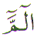
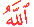
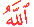

The letter Meem has two
aspects. One is the spiritual side and the other is physical or
material side. The physical side of a person is veiled from the
spiritual side by 40 veils. Forty is also the numerical value
of Meem. In order to lift these veils, a person must seclude and
meditate in the remembrance of Allah for 40 days. One by one the
veils get lifted if Allah Wills. At the end of the 40 days spiritual
and physical connection is made. The outward performance of prayer
also has an inner meaning. The outward sound of a prayer also
has an inner meaning. In this article some of the words / verses
of the Quran will be discussed which are connected with the letter
Meem. Let us start with the first Revelation received by Muhammad
 from Allah through Jibraeel (
from Allah through Jibraeel ( ).
).
Looking at the Arabic
letters of the first revelation. The message starts with Arabic
letter Alif ( ) and
ends with the Arabic letter Meem (
) and
ends with the Arabic letter Meem ( ) which
again hints creation started by Allah and finishing with the creation
of the Light of Muhammad
) which
again hints creation started by Allah and finishing with the creation
of the Light of Muhammad  . (see
Meem Part 1). Then Allah created the first Prophet Adam (
. (see
Meem Part 1). Then Allah created the first Prophet Adam (

 )
(
)
( ) whose name starts with the letter
Alif and ends with the letter Meem. He sent the Prophet Isa (
) whose name starts with the letter
Alif and ends with the letter Meem. He sent the Prophet Isa ( ) as the completion of the circle
of Messengers who were sent to their own communities and sealed
that circle with the arrival of Muhammad
) as the completion of the circle
of Messengers who were sent to their own communities and sealed
that circle with the arrival of Muhammad as the Messenger of Allah to all the communities.
as the Messenger of Allah to all the communities.
After the Opening Chapter
(one) Al Fatihah of the Quran in which the seeker asks Allah for
guidance, the next Chapter (two), Al Baqara starts with the Arabic
letters Alif Laam Meem . Even
the greatest verse in the Quran which is Ayat ul Kursi, starts
with Alif and ends with Meem
. Even
the greatest verse in the Quran which is Ayat ul Kursi, starts
with Alif and ends with Meem
Then the third Chapter Al Imran also starts with Alif Laam Meem. But this time there is an accent (zabar or fatha) on the letter Meem to highlight or emphasise the letter Meem. Why?
To ask Allah for a favour, Allah teaches us how to approach Him. The first example is:
What does Allahumma  mean? Most people
translate it as O
Allah. If Allahumma
means O Allah,
then what does Ya
Allah mean? Again
the translation will be O
Allah. If both Allahumma
and Ya Allah both translate to O Allah, then why do we need two different forms in Arabic
to say the same thing? If we look at the Arabic script, Allahumma is written
mean? Most people
translate it as O
Allah. If Allahumma
means O Allah,
then what does Ya
Allah mean? Again
the translation will be O
Allah. If both Allahumma
and Ya Allah both translate to O Allah, then why do we need two different forms in Arabic
to say the same thing? If we look at the Arabic script, Allahumma is written  . Allahumma is the Name Allah appended
with the letter Meem. Allahumma
. Allahumma is the Name Allah appended
with the letter Meem. Allahumma  starts with Alif and ends with Meem.
starts with Alif and ends with Meem.
When we tag a Meem after the Name Allah, and ask by saying Allahumma, we recognise Allah as our Creator and we also
recognise Muhammad  as the Messenger
of Allah. When we ask Allah by saying Allahumma
what we are really saying is Allah, we love You and follow your
Messenger Muhammad
as the Messenger
of Allah. When we ask Allah by saying Allahumma
what we are really saying is Allah, we love You and follow your
Messenger Muhammad  .
.
Now let us look for the first Kalima in the Quran. The first Kalima (to testify) There is no god only Allah, Muhammad is the Messenger of Allah is revealed in the Quran in two halves. The first half is revealed in only two places in the entire Quran which is There is no god only Allah. The first mention is Chapter 37:
The second mention is in Chapter 47:
The completion of the Kalima only occurs once in the entire Quran in Chapter 48:
Allah placed His half
of the Kalima in the Chapter that is named after His Beloved (Muhammad  which starts with
the letter Meem) and placed His Beloved's half
of the Kalima in the Chapter of Fath (Victory).
which starts with
the letter Meem) and placed His Beloved's half
of the Kalima in the Chapter of Fath (Victory).
Notice the wording in
Chapter 48...those
who are with him (Muhammad  ) are
strong against Unbelievers (but) compassionate amongst each other.
No wonder Muslims today
are weak against unbelievers and have no compassion amongst each
other, because they are not with Muhammad
) are
strong against Unbelievers (but) compassionate amongst each other.
No wonder Muslims today
are weak against unbelievers and have no compassion amongst each
other, because they are not with Muhammad  ,
they believe he is dead. These Muslims cannot think beyond their
own physical bodies. He IS with us spiritually.
The human body is the biggest veil. Without the soul or the spirit,
the body is useless. And the soul is the Breath of Allah. Victory
is for those who believe in Allah, and are with His Messenger
Muhammad
,
they believe he is dead. These Muslims cannot think beyond their
own physical bodies. He IS with us spiritually.
The human body is the biggest veil. Without the soul or the spirit,
the body is useless. And the soul is the Breath of Allah. Victory
is for those who believe in Allah, and are with His Messenger
Muhammad  .
.
Since Allah loves the
Prophet Muhammad what is required
of a true Muslim? A true Muslim must love the Prophet Muhammad
what is required
of a true Muslim? A true Muslim must love the Prophet Muhammad
 more than any other person, more
than even his or her parents. When a person loves the Prophet
Muhammad
more than any other person, more
than even his or her parents. When a person loves the Prophet
Muhammad  more than any other person (parents,
brothers, sisters, wife, husband, friends) then Allah loves that
person just because he or she loves His Beloved.
more than any other person (parents,
brothers, sisters, wife, husband, friends) then Allah loves that
person just because he or she loves His Beloved.
Allah will forgive a person's sins just for the sake of that love.
Another example of 40
or Meem is: Allah sent Nuh (Noah ( ))
to warn his community to repent before the punishment of Allah
falls on them. They rejected his warning. Allah then sent the
rain and flood which lasted 40 days. With the rain and flood,
the world was purged of disbelievers, and there was a new beginning
for the world, morally and spiritually. The analogy of this is
the Message revealed to Muhammad
))
to warn his community to repent before the punishment of Allah
falls on them. They rejected his warning. Allah then sent the
rain and flood which lasted 40 days. With the rain and flood,
the world was purged of disbelievers, and there was a new beginning
for the world, morally and spiritually. The analogy of this is
the Message revealed to Muhammad  :
:
In the first case the
rain is a blessing for the people. It fertilises fields, causes
crops to grow. But it can be a catastrophe if it causes floods.
The believers were saved and the disbelievers perished. The flood
was a blessing in the sense all the disbelievers and oppressors
were killed while all the believers were saved. Yet they lived
through the same rain. In the second case with the arrival of
Muhammad  and the revelation of Quran Majeed,
Truth arrived and falsehood perished. Quran Majeed is a blessing
for the believers and it causes loss to the unjust. Yet the verses
of the Quran remain the same, they do not change. The analogy
is hinted at by verse 17 of the same chapter:
and the revelation of Quran Majeed,
Truth arrived and falsehood perished. Quran Majeed is a blessing
for the believers and it causes loss to the unjust. Yet the verses
of the Quran remain the same, they do not change. The analogy
is hinted at by verse 17 of the same chapter:
Meem itself when opened up and written in Arabic as pronounced consists of which is Meem Ya Meem. Adding the numerical values of these letters (where Meem = 40 and Ya = 10), 40 + 10 + 40 = 90. The 0 in 90 represents the clot. The clot was mentioned right at the start in the first revelation Al Alaq Chapter 96 and the chapter is also named The Clot. The clot, forms into a human being over 9 months. This equates roughly to 40 weeks for most normal pregnancies. This was the theme of the first revelation stated at the beginning of this article.
On the Throne the Name
of Allah that is inscribed is Ar
Rahman. The word ar Rahm (the womb) is created from the attribute Ar Rahman. The Messenger  of Allah
said: 'Allah Says:
"That is ar Rahm (the womb) and I am Rahman. Whoever conceives
lawfully, has pleased Me and whoever conceives unlawfully, has
offended Me."'
of Allah
said: 'Allah Says:
"That is ar Rahm (the womb) and I am Rahman. Whoever conceives
lawfully, has pleased Me and whoever conceives unlawfully, has
offended Me."'
Muhammad  further added, that the angels protect the seed of man for 40
days. Because until the age of 40 years the person is to gain
experience. This brings this article back full circle to where
Meem Part 1 started. There is no end to the
Knowledge of Allah through the Prophet Muhammad
further added, that the angels protect the seed of man for 40
days. Because until the age of 40 years the person is to gain
experience. This brings this article back full circle to where
Meem Part 1 started. There is no end to the
Knowledge of Allah through the Prophet Muhammad  .
Only Allah Knows Best. May Allah open up our eyes and minds (Ameen).
.
Only Allah Knows Best. May Allah open up our eyes and minds (Ameen).
| BACK |